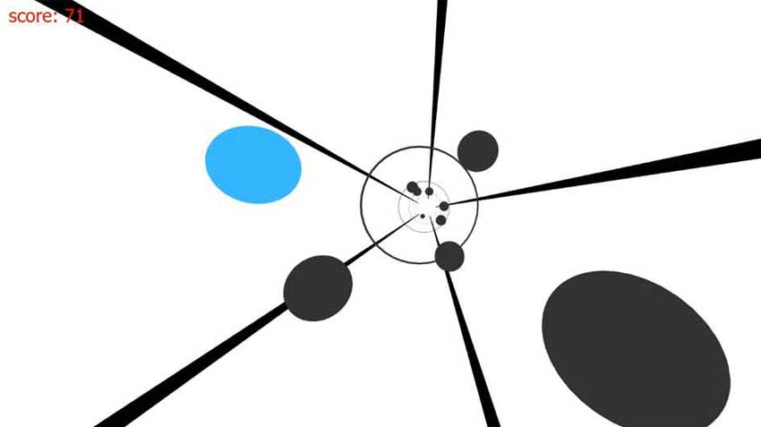

A single/multiplayer tunnel racer game implemented on a custom ECS engine visually styled to look like Missile Game, featuring high scores and swappable player controls

Written in C++11, using Win32, Direct3D 11 and FW1FontWrapper
MSC Computer Science for Video Game Development, University Of Hull, UK
In learning game engine architecture, collisions and console hardware, the module aims to show the workings of an entity-component system (hybrid), by implementing an infinite tunnel game. The player moves along a tunnel, avoiding obstacles. Each obstacle avoided increases player score, and speeds up the player's movement (and therefore, difficulty). Scores are kept in a high score data file. Single and dual-player mode allows two players to move along the tunnel aiming to last the longest. Controls are mouse and keyboard, and players can select their preferred control scheme.
See the project in action:
The application is written in C++11, and is developed for Microsoft Windows 10 (as a Win32 app), and uses a bespoke entity-component system. Further libraries and specifications:
The application is a custom ECS framework, expanded from a bare-bones implementation. Entities are created as groups of components (such as geometry and behaviour) which are acted upon by represeentative systems (such as the Rendering system acting upon geometry and texturing or lighting elements, or a physics system updating the position of an object).
Tunnel entites are given a behaviour to give the effect of tunnel traversal, such as the 'ring' or 'join' geometry appearing to race toward the camera. The camera has a small sine-based movement in the XZ plane to provide a small perspective change to enhance the 3D effect (since conventional shading is not applied, depth ,may not be as easily established).
Obstacles are given a rotation value (and random multiplier to control direction and speed) to move around the 'outside' of the tunnel. The randomized multiplier is ranged within [2..-2] to give up to double-speed rotations in either direction (negative values perfrom rotation in the opposing direction). When an obstacle is 'behind' the player, it is re-used; placed at the distant end of the playing field with a new rotation value, and the score is increased.
A 'matrix' of collidable objects is built to allow the engine to calculate whether or not action should be taken on collisions between objects (in this case, the player -vs- an obstacle), meaning callbacks are called ONLY when the correct types collide. The callback calls upon the game logic to act upon collisions (in the game's case, a 'game over') scenario.
Player high scores are stored in a list with maximum size of 10 (when new scores are added, the list is sorted and truncated to maximum size 10) and written to file when the app exits.